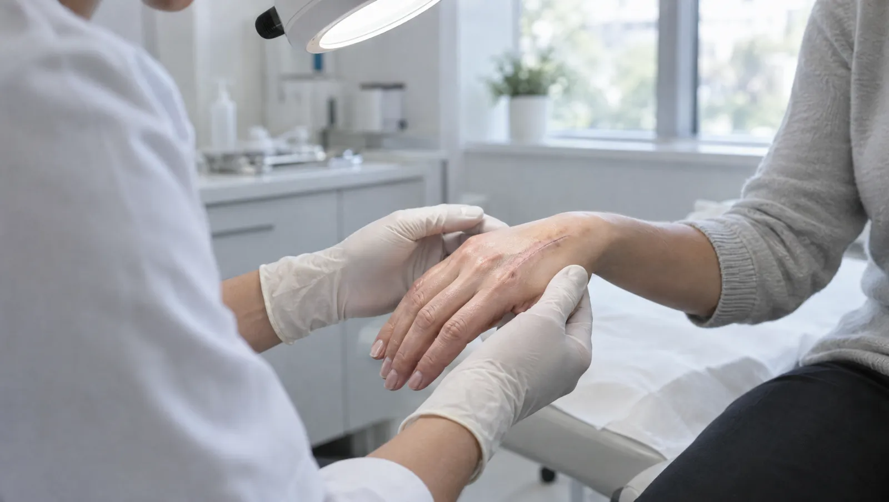

Plastik cerrahinin onarım ve estetik tarafı nasıl ayrılır?
Plastik cerrahi iki ana alanda çalışır. Rekonstrüktif tarafta yanık, kaza, kanser ameliyatı ya da doğumsal nedenlerle kaybolan doku ve işlev onarılır. Estetik tarafta ise sağlıklı dokuda görünüme yönelik değişiklik yapılır. İki alanda da aynı ilkeler geçerlidir: dokunun kanlanmasını korumak, gerginliği dengelemek ve yarayı dikkatle iyileştirmek.
Estetik bir ameliyat düşünüyorsanız ilk görüşme bir karar toplantısı değildir. Cerrah beklentinizi, sağlık geçmişinizi ve dokunuzun özelliklerini değerlendirir. Neyin değişebileceğini, neyin değişmeyeceğini açıkça konuşur. Her ameliyatın bir yara izi, iyileşme süresi ve olası komplikasyonları vardır. Bunları öğrendikten sonra düşünmek için kendinize zaman tanıyın.
Onarım ameliyatlarında amaç, işlevi geri kazandırmaktır. Örneğin elde kesilen bir tendonun dikilmesi, yanık sonrası hareketi kısıtlayan izin gevşetilmesi ya da uzun süre kapanmayan bir yaranın deri nakliyle örtülmesi bu gruba girer. Gerektiğinde bu ameliyatları genel cerrahi, ortopedi ve yoğun bakım ekipleriyle birlikte planlarız.

Plastik cerrah hangi sorunlarda devreye girer?
- Kapanmayan ya da tekrar tekrar açılan yaralar
- Yanık sonrası kalınlaşan, hareketi kısıtlayan izler
- Elde kesi sonrası parmağı bükememe ya da uyuşma
- Yüzde dikiş gerektiren kesiler
- Büyüyen, renk değiştiren ya da kanayan ben ve deri lezyonları
- Meme ameliyatı sonrası onarım isteği
- Büyük kilo kaybından sonra sarkan deri
- Kepçe kulak ve göz kapağı sarkması gibi görünüm ya da işlev sorunları
Acil durumGeniş ya da derin yanıklar, yüz, el ve genital bölge yanıkları, elektrik ve kimyasal yanıklar ile parmak kopması acildir. Kopan parçayı nemli bir gazlı beze sarıp temiz bir poşete koyun, poşeti buzlu suyun içine yerleştirin. Parçayı doğrudan buza değdirmeyin. 112'yi arayın ya da hemen acil servise gelin.
Onarım ve estetik cerrahinin konuları
- Yanık ve yanık sonrası izler
- Kronik yaralar ve bası yaraları
- Şeker hastalığına bağlı ayak yaraları
- El tendon ve sinir yaralanmaları
- Deri kanserleri ve şüpheli benler
- Yüz kesileri ve yüz kemiği kırıkları
- Meme küçültme ve meme onarımı
- Burun estetiği
- Göz kapağı estetiği
- Karın germe
- Yağ alma (liposuction)
- Kepçe kulak
Plastik cerrahide uygulanan başlıca ameliyatlar
Deri nakli ve doku aktarımı
Kapanmayan yara ya da yanık alanı, vücudun başka bir bölgesinden alınan deriyle veya kanlanması korunmuş komşu dokuyla örtülür.
El cerrahisi
Kesilen tendon ve sinirlerin onarımı ile elde hareketi kısıtlayan izlerin açılması. Ameliyattan sonraki el egzersizleri iyileşmenin önemli bir parçasıdır.
Ben ve deri tümörü çıkarılması
Şüpheli lezyon güvenli bir sınırla çıkarılır ve patolojik incelemeye gönderilir. Kesi, izin daha az dikkat çekmesi için cilt çizgilerine paralel planlanır.
Meme küçültme
Boyun, sırt ve omuz ağrısına yol açan büyük memelerde doku ve deri azaltılır. Meme ucu korunarak meme yeniden şekillendirilir; ameliyat kalıcı bir iz bırakır.
- Hazırlık
- Sigarayı ameliyattan haftalar önce bırakın
Burun estetiği
Burnun görünümü ile nefes yolu birlikte değerlendirilir. Şişliğin büyük kısmı haftalar içinde iner; burnun son şekli ise aylar içinde oturur.
- Hazırlık
- Kullandığınız bitkisel takviyeleri hekiminize bildirin
Göz kapağı ameliyatı
Sarkan üst kapak derisi ya da alt kapak torbaları düzeltilir. Üst kapak sarkması görüşü kapatıyorsa ameliyat işlevsel bir amaç da taşır.
Plastik cerrahi görüşmesinden önce düşünmeniz gerekenler
- Neyi neden değiştirmek istediğinizi kendi cümlelerinizle yazın
- Sigara kullanıyorsanız bırakma planınızı görüşmeye getirin; sigara yara iyileşmesini bozar
- Kullandığınız ilaçları ve bitkisel takviyeleri listeleyin
- İyileşme döneminde işten ve spordan ne kadar uzak kalabileceğinizi hesaplayın
- Yara ya da yanık için geliyorsanız daha önce aldığınız tedavilerin kayıtlarını getirin
Plastik ve Estetik Cerrahi hekimleri

Ameliyat kararı vermeden önce sorduklarınız
Ameliyat izi tamamen kaybolur mu?
Hayır. Deriyi kesen her ameliyat bir iz bırakır. Cerrah kesiyi daha az görünen bölgelere ve cilt çizgilerine yerleştirmeye çalışır. İz ilk aylarda kırmızı ve kabarık olabilir; 1-2 yıl içinde genellikle açılır ve yumuşar. Güneşten korumak ve sigara içmemek bu süreci olumlu etkiler.
İyileşme için işten ne kadar izin almalıyım?
Bu süre ameliyatın türüne göre çok değişir. Göz kapağı ameliyatında morluk birkaç haftada çekilir, karın germede ise iyileşme daha uzun sürer. İş ya da tatil planı yapmadan önce iyileşme süresini cerrahınızla netleştirin.
Sigara içiyorum, bu ameliyatı etkiler mi?
Sigara, dokuya giden kan akımını azaltır. Bu durum yara açılması, enfeksiyon ve deri kaybı riskini artırır. Karın germe, meme küçültme ve doku aktarımı gibi geniş deri kaldırılan ameliyatlarda risk daha da belirginleşir. Cerrahınız ameliyattan önce ve sonra belirli bir süre sigarayı bırakmanızı isteyecektir.
Yanık izleri ameliyatsız iyileşebilir mi?
Bazı yanık izleri basınç giysisi, silikon uygulamaları ve masajla belirgin biçimde yumuşar. Hareketi kısıtlayan ya da eklem üzerinde gerilen izlerde ise ameliyat gerekebilir. Tedaviye erken başlamak seçenekleri artırır.
Hangi durumlarda estetik ameliyat ertelenmelidir?
Kontrol altında olmayan kronik hastalıklar, yakın zamanda planlanan gebelik, kısa sürede çok kilo verme hedefi ve yoğun stres dönemleri ertelemeyi gerektirebilir. Beklentinin gerçekçi olmaması da önemli bir nedendir. Cerrah, ameliyatın size yarar sağlamayacağını düşünürse bunu açıkça söyler.
Bu sayfayı Op. Dr. Pınar Altıntaş gözden geçirdi. Son güncelleme: 7 Ekim 2026.